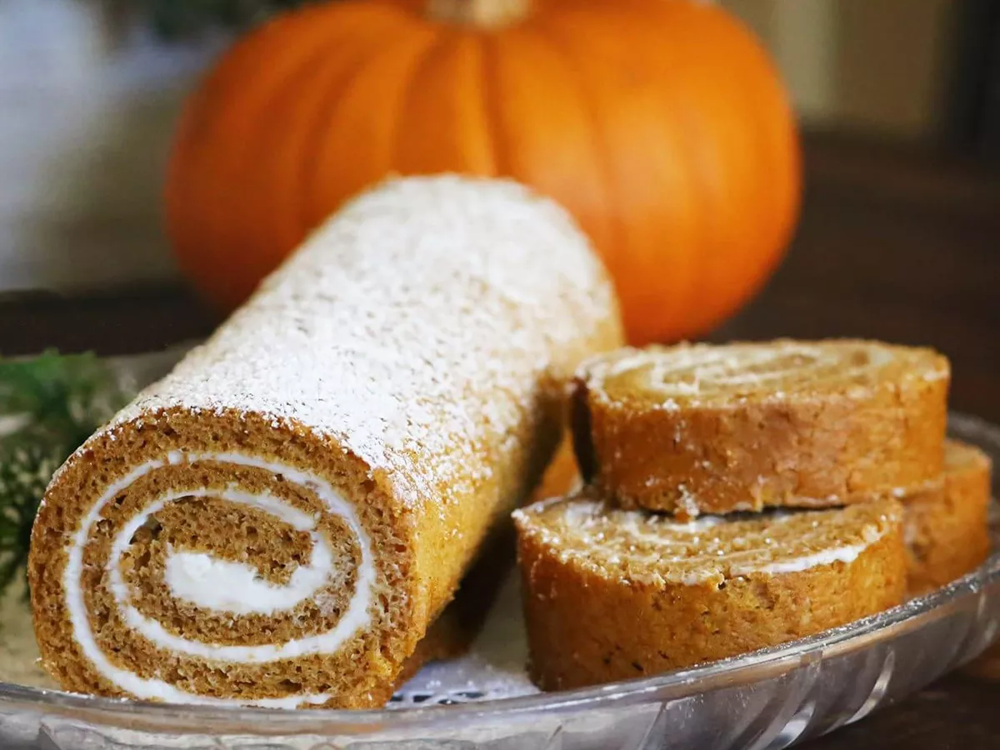

Pumpkin Roll

Try this pumpkin roll recipe for a standout holiday dessert! A moist, spiced pumpkin sheet cake is spread with a vanilla cream cheese filling, then rolled up and dusted with powdered sugar for an after-dinner treat that's both elegant and delicious.
Ingredients
- Eggs
- Sugar
- Pumpkin puree
- Cinnamon
- Flour
- Baking soda
- Cream Cheese
- Sugar
- Butter
- Vanilla Extract
Steps
- Mix the eggs, sugar, pumpkin, and cinnamon in a bowl. Mix the flour and baking soda in a separate bowl, then add it to the egg mixture. Blend the batter until smooth. Spread the batter in a prepared jelly roll pan. Bake in a preheated oven until the cake springs back when touched.
- Invert the cake onto a cotton tea towel. Let the cake cool for about five minutes. Roll the cake up in the towel jelly-roll style. Place the cake seam-side down and allow it to finish cooling.
- Beat the cream cheese, confectioners' sugar, butter, and vanilla in a mixing bowl until smooth.
- hen the cake is cool, unroll it and evenly spread with the cream cheese mixture. Roll the cake up again without the towel. Dust with confectioners' sugar before serving.
Home